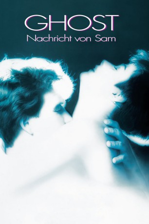

#8121 Ghost - Nachricht von Sam
Alternativ: Ghost
Auszeichnungen: 2 Oscars gewonnen für 3 Oscars nominiert 1 GoldenGlobes gewonnen 1 BAFTA-Awards gewonnen
 
 IMDB-Wertung: 7.0 / 10
IMDB-Wertung: 7.0 / 10  Metascore: 0
Metascore: 0 
Ein kurzer Blick auf das Leben des erfolgreichen Bankers Sam Wheat genügt, um zu sehen, dass er sein Glück gefunden hat. Zusammen mit seiner großen Liebe, der Künstlerin Molly, genießt er ein sorgenfreies Dasein. Doch dann geschieht etwas Furchtbares: Nach einem Theaterbesuch werden Molly und Sam überfallen. Während eines kurzen Kampfes löst sich ein Schuss aus der Waffe des Angreifers, der sich aus dem Staub macht. Es dauert einen Moment, bis Sam realisiert, dass er getroffen und tödlich verwundet wurde. Als Geist ist er in einer Sphäre zwischen Dies- und Jenseits gefangen. Er kann zwar sehen, was in der realen Welt passiert, aber niemand aus dem Reich der Lebenden kann ihn wahrnehmen. Sam fragt sich, warum er zu einer rastlosen Existenz in der Zwischenwelt verdammt ist. Aber dann teilt ihm ein Geist mit, dass er erst eine Aufgabe erledigen muss, bevor er Ruhe finden kann. Sam weiß, dass er seinen Mörder zur Strecke bringen muss.
Jahr: 1990
Dauer: 126 Minuten
FSK: 12
Land: USA Studio: Paramount PicturesTonspuren: DD5.1 - ,
Untertitel: Deutsch,
Auflösung: 1080p (1920x1080) Größe: 13516 MB
Genre: Thriller, Drama, Fantasy, Liebe
Regisseur: Jerry Zucker
Drehbuch: Bruce Joel Rubin
Soundtrack: Maurice Jarre
Darsteller:
 Patrick Swayze als Sam Wheat
Patrick Swayze als Sam Wheat Demi Moore als Molly Jensen
Demi Moore als Molly Jensen Whoopi Goldberg als Oda Mae Brown
Whoopi Goldberg als Oda Mae Brown Tony Goldwyn als Carl Bruner
Tony Goldwyn als Carl Bruner Rick Aviles als Willie Lopez
Rick Aviles als Willie Lopez- Phil Leeds als Emergency Room Ghost
 Vincent Schiavelli als Subway Ghost
Vincent Schiavelli als Subway Ghost- Gail Boggs als Oda Mae's Sister
 Stephen Root als Police Sgt.
Stephen Root als Police Sgt.- Alma Beltran als Woman Ghost
- Vivian Bonnell als Ortisha
 Tom Finnegan als Bank Guard
Tom Finnegan als Bank Guard Bruce Jarchow als Lyle Furgeson
Bruce Jarchow als Lyle Furgeson Said Faraj als Cab Driver
Said Faraj als Cab Driver- Steven-Charles Jaffe als Man at the Party After Sam's Funeral (uncredited)
- Stanley Lawrence als Elevator Man
- Christopher J. Keene als Elevator Man
- Susan Breslau als Susan
- Martina Deignan als Rose
- Rick Kleber als Mover
- Macka Foley als Mover
- John Hugh als Surgeon
- Sam Tsoutsouvas als Minister
- Sharon Breslau als Cemetery Ghost
- Angelina Estrada als Rosa Santiago
- Armelia McQueen als Oda Mae's Sister
- Thom Curley als Workman in Loft
- Laura Drake als Policewoman
- Augie Blunt als Orlando
- Derek Thompson als Ortisha's Friend
- J. Christopher Sullivan als Man Ghost
- Charlotte Zucker als Bank Officer
- Sondra Rubin als Nun
- Faye Brenner als Nun
- William Cort als Bank Co-Worker
- Minnie Summers Lindsey als Apartment Woman
- Mabel Lockridge als Apartment Woman
- William L. Arance als Dark ghost
- Mike Jittlov als Dark Spirits
- Billy Marshall Thompson als Extra (uncredited)
- Burton Zucker als Subway Passenger (uncredited)
Datei: X:\1990\Ghost - Nachricht von Sam (1990, FSK12, 1920x1080).mkv seit 28.01.2018
Festplatte: HD 1987-1991
 Es gibt insgesamt 52 Filme in der Gruppe '1990'
Es gibt insgesamt 52 Filme in der Gruppe '1990'